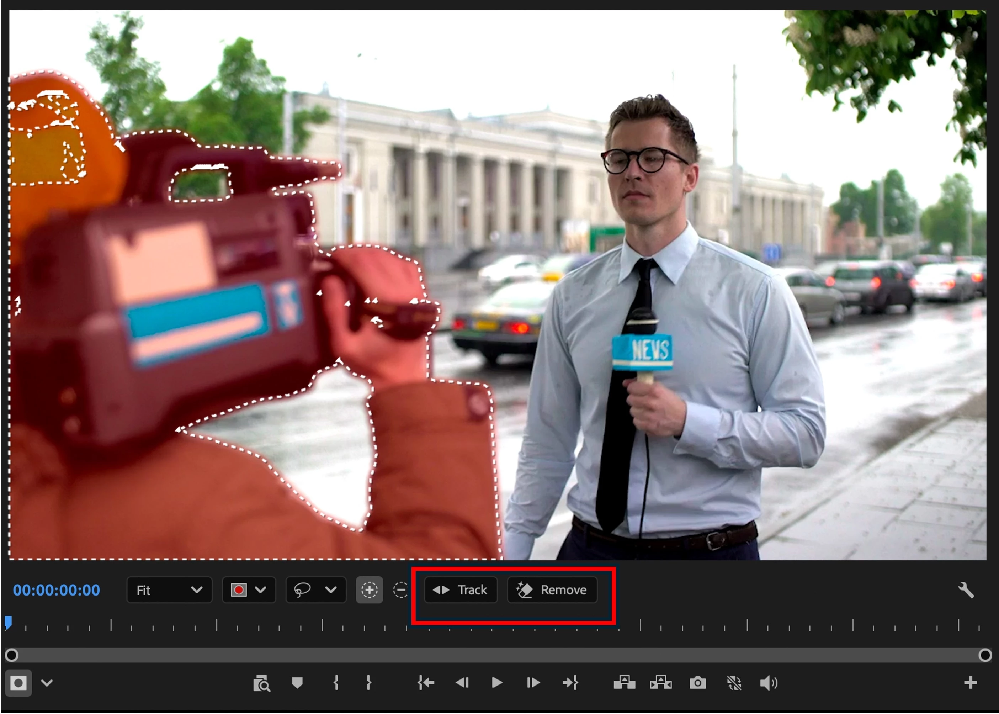
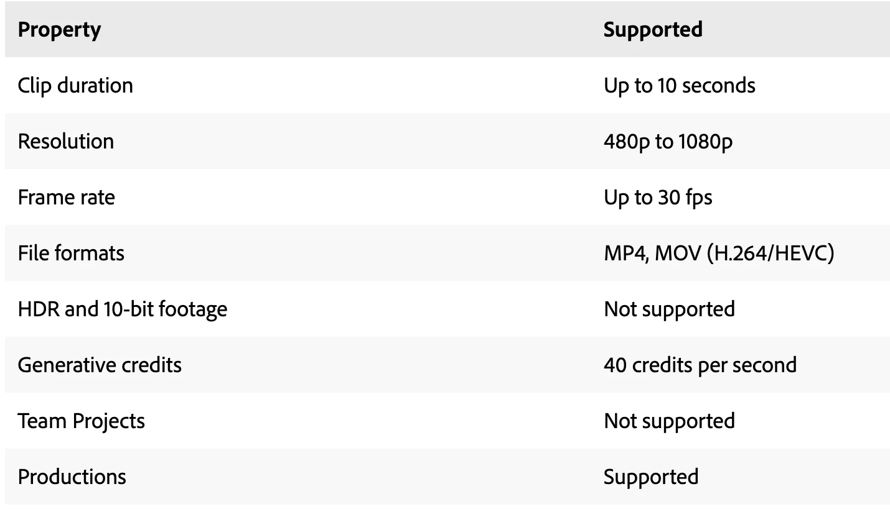
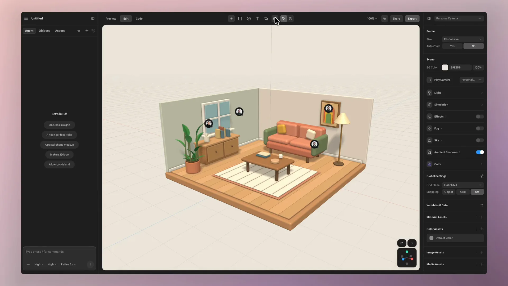
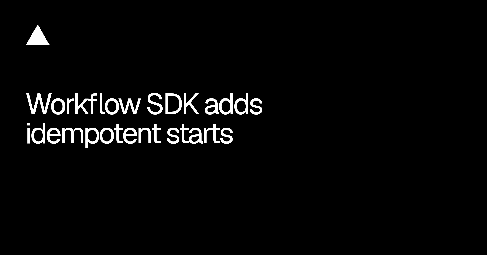
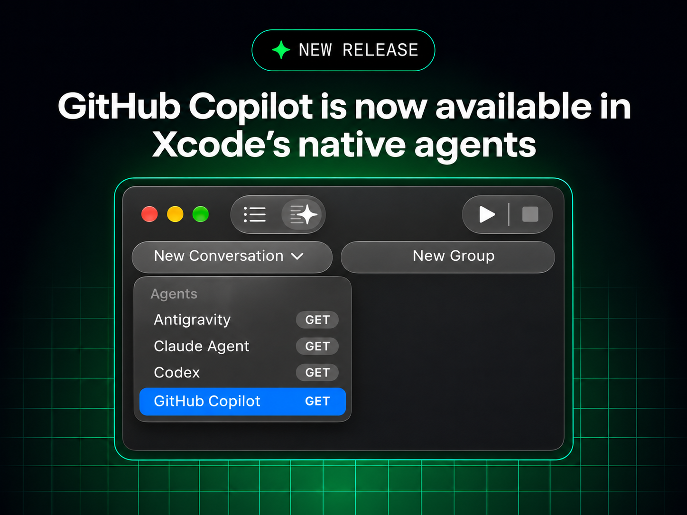
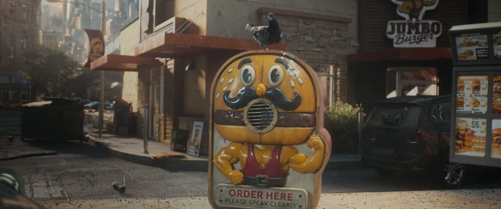

今天这批更新都碰到了“真活儿”里最贵的部分：视频要按秒烧 credits，工作流重复一次可能就多跑一份账，硬件外壳画得出来也不代表工厂装得上。会生成已经不稀奇了，接下来该看的是边界有没有写在明面上，失败时能不能退，重复动作会不会被拦住。
另外一个信号也很清楚：agent 正从独立聊天框钻进 Xcode、Spline 评论和 CAD/ECAD 流程。入口越来越顺，审核痕迹和现场上下文就不能再靠人脑补。

Premiere beta 新增 Generative Remove：先给不想要的物体画 mask、跟踪，再让云端只补选区。原片不动，可以重算、改 mask 或退回；多个干扰物也能拆成多个 mask 一次处理。整段最好一次生成，官方自己也提醒，切成几段分别补，接缝前后可能长得不一样。

别被“AI 擦除”四个字带跑。当前只收 480p–1080p SDR、最高 30fps、最长 10 秒；HDR、10-bit 和 Team Projects 都还不行，费用是每秒 40 credits。满十秒就是 400 credits，mask 追丢再来一次又是一份。这个 beta 先拿穿帮杆、路人和小面积反射去试，别拿长镜头当橡皮擦。
这一版同时塞进两件很不一样的东西。Icon Sheets 能用一段英文生成一套风格统一的图标，每个结果都是独立图层里的可编辑矢量；可以追同一枚图标的变体，也能拿现成图标做 style reference。注意，目前只认英文。
另一半反而更耐用：Bitmap Rasterize 终于不只剩黑白一刀切，Threshold、Pattern Dither、Diffusion Dither、Halftone Screen 都能选，前景、背景和透明也能自己定。批量图标还没实测，先不夸一致性；位图网屏这块倒是马上能进海报、包装和网页质感试验。

Spline 重做了 3D 评论：有面板、未读、resolve / reopen 和 pin 预览。更狠的一步是，评论线程里可以直接 Ask AI；Agent 改完文件，会切回留言人的 camera 检查，再在原线程回复。你不明确叫它 resolve，它不会替人把问题关掉。评论也能通过 MCP 读写。
这已经不是“在 3D 文件上贴便签”，而是把评论变成可执行工单。最关键的不是 Agent 会改模型，是它带着留言人的视角去验收。做空间界面、动效和复杂画布时，camera、selection、状态都该跟着反馈一起交接，少一个都容易答非所问。

Vercel Workflow SDK 的 start() 现在能在同一步里接纳 run 并占住 hook token。相同 token 再来一次会抛 HookConflictError，不会偷偷多开一条；早到的 payload 会排队按顺序交付。业务里的 order ID、invoice ID、import ID 都能直接当这把锁，experimental_minRetention 还能让流程结束后继续拒绝迟到的重复请求。
这条看着像后端小修，其实很适合 agent 工作流。用户双击、Webhook 重送、网络重试，最怕的不是报错，是成功两次。升级到 workflow 5.4.0 后，先给“生成一份资产”“发布一次内容”“扣一次额度”这类动作都补上业务 token；比事后清重复记录便宜多了。
After Effects beta 27.1.0.028 在重算 layer controls、mask outline 和 shape interaction，目标是拖形状、对齐文字时少一点粘手；最终输出不该变，Adobe 还做了像素比对。官方也说得保守：简单 comp 原本就快，不一定看得出差别。
评论区马上有人拿 RTX 3090Ti 和 M1 Ultra 试了，beta 与 release 都没看出明显区别，复杂 shape 仍然拖不动；Adobe 随后索要工程、屏幕录像和完整机器信息。这条先留在观察名单，不写成“性能问题解决了”。软件流畅度最终还是要拿真实 comp 说话，发布视频不是交付边界。

GitHub Copilot 进入 Xcode 27.3 beta 自带的 Coding Assistant，目前是 public preview，要求 macOS Tahoe 26.6 或更高，所有 Copilot 套餐都能用。原来的 Copilot for Xcode 扩展没有消失，这是两条独立路径。
原生入口省掉扩展来回抢焦点，也让会话更靠近工程、Build 和 Xcode 自己的上下文。代价是团队又多了一种接入方式。要试就固定同一个项目、同一组任务，把原生 Agent 和旧扩展的 diff、编译成功率、引用文件范围摆在一起；“看起来更像 Xcode”不等于改得更稳。
OpenAI 用 Astra 做了一台能连 Codex 对话的设备：GPT-6 负责功能、外壳、PCB、UI 和软件整合，两个人把它当 side project，不到一周完成设计，代工厂不到一个月做出一小批样机。CAD、制造图、仿真、ECAD 和跨专业 review，已经都在 agent 的射程里了。
真正该划线的是后面那句：进制造仍然来回 review 了几轮，因为模型没有稳定吃透产线限制、公差和装配细节。这个案例不证明“硬件可以无人设计”，它证明 agent 能很快把问题推到专业审查面前。产品设计要准备的不是更长的 prompt，而是材料、工艺、公差、BOM、可制造性和版本变更这些能被检查的真值源。

视频：YouTube 原片https://www.youtube.com/watch?v=ff6ZvCfHJrM｜来源：Stash 制作解析https://www.stashmedia.tv/tom-noakes-black-kite-deliver-the-doom-burger-for-kfc/
Business Club 导演 Tom Noakes、Black Kite 和 Mother 给 KFC ×《Avengers: Doomsday》做了一分钟的末日片。开头先让车从一块傻乎乎的汉堡点餐牌旁边滑过去，镜头越抬越高，城市裂成深坑，Doctor Doom 站在边缘。大世界观已经立住，片子却没急着摆英雄，转身去看那些还在营业的破店、乱飞的招牌和撞成一团的黄色外卖车。
画面最妙的是两套语气一直顶着：一边是灰绿天空、巨大断层、火球和蓝色飞行器，另一边是廉价霓虹、披萨店血浆、卡通吉祥物和夸张商品字。前半段用慢推、仰角和广角规模感，后半段越剪越碎，事故像连续的视觉笑点；最后不解释世界，只把一座完好的 KFC 放在废墟中央，再切黑色面包的 Doom Burger。产品是笑话的句号，不是硬插的 packshot。
这条适合拿来拆“借 IP 但不被 IP 吃掉”的方法：品牌只抓自己的红、白、餐厅轮廓和食物特写，Marvel 负责尺度和威胁感，中间靠一串环境 gag 缝起来。做产品发布片也能照着练一次——先定两种互相打架的情绪，再让每个镜头同时服务其中一边，别把所谓反差只留给最后一句文案。
过去 24 小时真正新增的只有两条，旧 conference 和昨天的 Levi’s 不返场凑数。
ff6ZvCfHJrM 与 60 秒原片抽帧已核。Bass X Machina 轻观察。最近 feed 只有这两条新内容，因此没有把 Motion Plus、Motion North、Levi’s、Flora、BFG 和 Crown Royal 再搬一遍。Let’s Get Fuzzy。没有新的实测、价格、权限、失败成本或制作 breakdown，不换标题重发。核验说明：Adobe、GitHub、Vercel、Spline、OpenAI 与 Stash 官方页面于 2026-11-05 回读。正文 6 张配图原始宽度为 1430–2809px，并逐张目视检查；一张 640px Premiere 动图因不达标已剔除。Doom Burger 60 秒原片已下载并按 5 秒间隔抽帧检查；飞书发布将保留 Stash 与 YouTube 的 Preview View，不插单独视频封面。